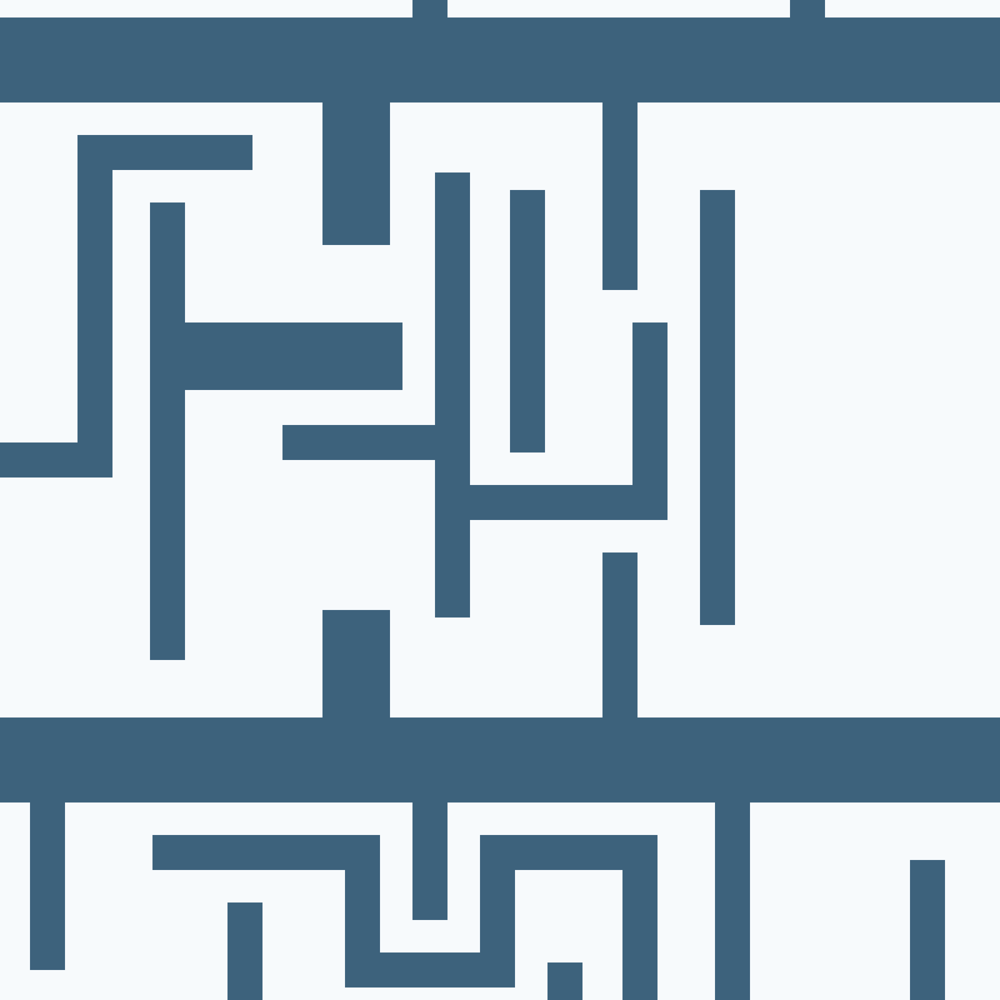
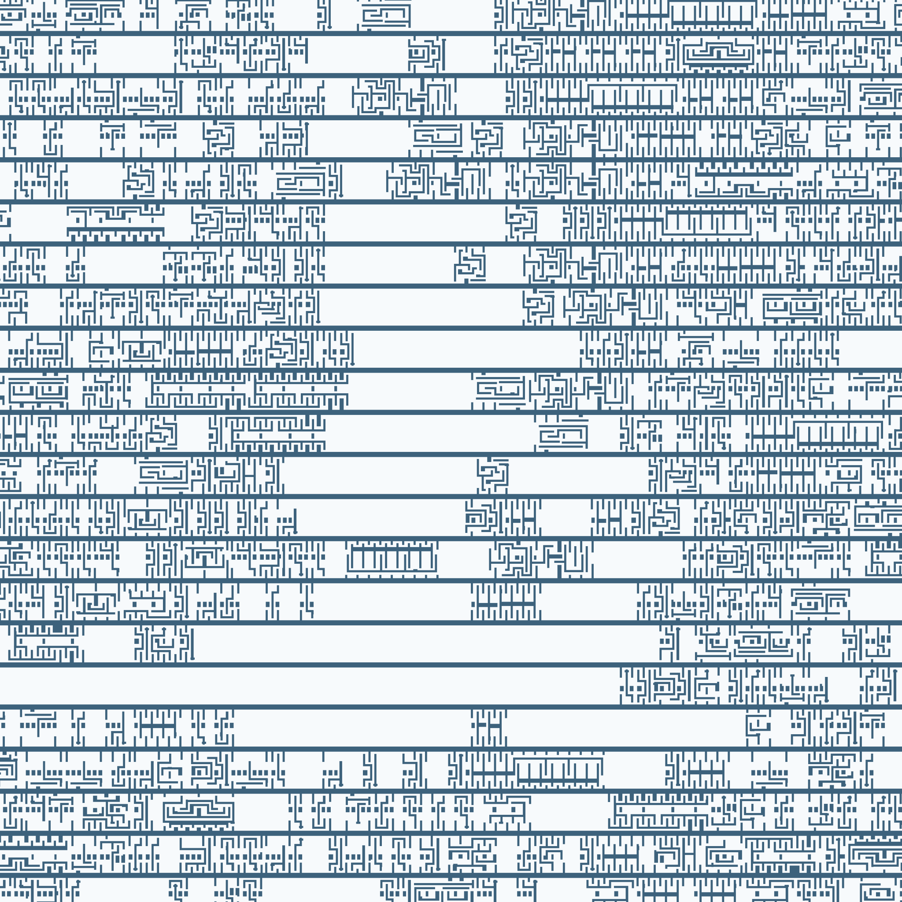
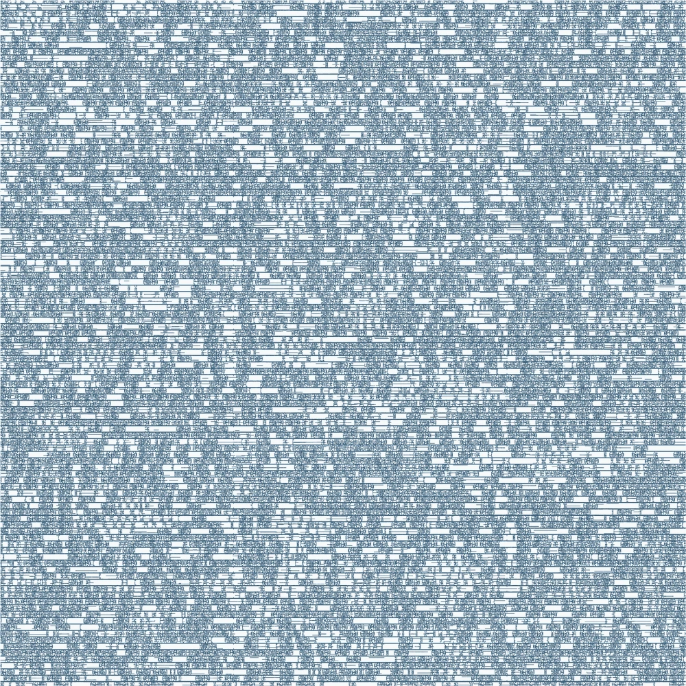

Lowest EPE
Mean absolute edge placement error
AI for Manufacturability in EDA
CORD-OPC: Learning the Next Mask through Correction Dynamics in Parametric Curve Space
Results at a glance
2 µm · 30 µm · 150 µm
CORD-OPC leads all six evaluated academic baselines in all three metrics.*
Mean absolute edge placement error
Primary computation time
Nominal mean intersection over union
* 30 µm TAT is estimated. Academic baselines only; commercial reference excluded.
Each row shows CORD-OPC and the best academic baseline for that metric and size. TAT covers primary computation; CORD-OPC’s 30 µm TAT is estimated.
Academic baselines: MultiILT, DiffOPC, CardOPC, DROPC, Refragmentation and FuILT. C.T. is a separate commercial reference. Test coverage: 1,000 clips at 2 µm, 10 layouts at 30 µm and one full-chip layout at 150 µm.
Method
Drag j along the dashed guide to see where the light around fixed point i gets darker or brighter.
Here, moving j closer changes the diffracted light so that it partially cancels the original light field at i. The initial optical coupling matrix guides the Spatial Transformer during training.
AP tokens encode Fourier features of anchor coordinates and local state attributes.
Joint attention mixes the AP, polygon and layout tokens from geometry encoding. An edge MLP learns signed AP-to-AP weights from features and relative geometry. Gated fusion updates the receiver’s AP feature.
Persistent AP IDs align the history. The decoder combines the latest temporal feature with target-layout features to predict a displacement, then the curves are rebuilt from the updated anchors.
Faint · recent masks / Blue · current mask / Arrows · anchor motion
2 µm case · Fig. 5 region
Step through 16 corrections and see how local anchor motion changes the mask and the simulated resist.



C.T. is the commercial reference. TAT covers primary computation and excludes initialization, SRAF insertion, export and final evaluation. * CORD-OPC’s 30 µm TAT is estimated.
Each point is one matched layout, ordered from largest improvement. Above zero favors CORD-OPC. Select a point to see both methods' values.
The selected resist contour uses one focus and dose. The PV band shows where coverage varies across all nine conditions.